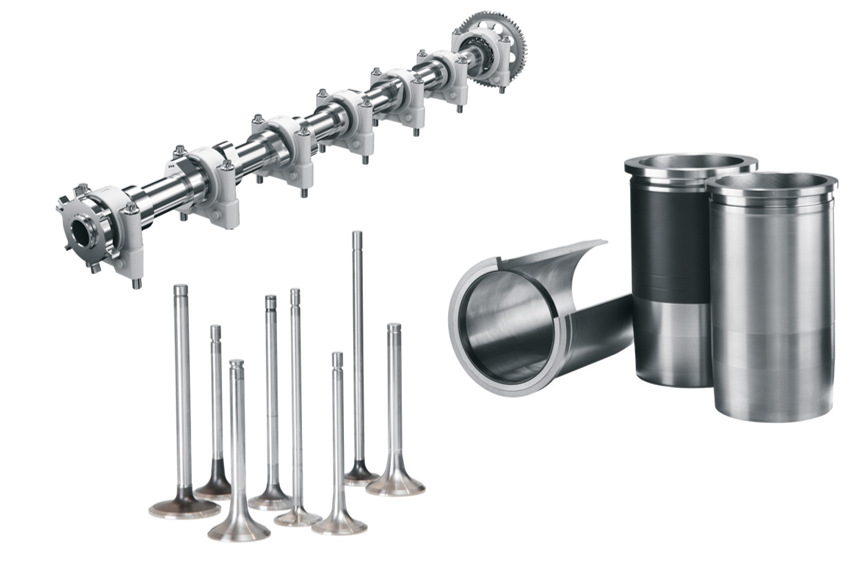

Overview:
I got the opportunity to work as a Sales & Application Engineer at MAHLE Engine Components India. This was my first
full-time role after my bachelor's degree. I was based out of Pithampur plant in Madhya Pradesh, India. It was a
techno-commercial job where I worked on new & running projects with 25 automotive companies worldwide and applied my engineering
skills to understand how things work for application engineering part.
As this was my first encounter within an industrial setting, my motivation to work at MAN Trucks was to gain insight into how a company works, what all departments
a company has, what kinds of machines a company uses and to get a deeper understanding of automotive engineering. Before describing
anything about my projects, I'd like to tell you more about the company.
MAN (Maschinenfabrik Augsburg- Nürnberg) SE, formerly MAN AG, is a German mechanical engineering company and parent
company of the MAN Group. MAN SE is based in Munich. Its primary output is for the automotive industry, particularly
heavy trucks. Further activities include the production of diesel engines for various applications, like ship propulsion,
and also turbo machinery.
MAN supplies trucks, buses, diesel engines and turbo machinery. The company celebrated its 250th anniversary in 2008.
The company operates through fully owned subsidiaries or joint ventures with local companies in India, Poland, Turkey,
China, United States, United Arab Emirates, South Africa, Uzbekistan, Portugal and Germany/Austria. In India, MAN Trucks
India Pvt. Ltd., a 100% subsidiary of MAN Truck & Bus AG, Germany, manufactures heavy trucks and buses, both for the
Indian market as well as for export to Asian, the Middle East and African countries. The MAN CLA range of products
manufactured by MAN Trucks India has made a mark not only in India but also has a significant presence in around 25
countries.
MAN Trucks India started its operations in 2006 to cater the country’s requirement for high-quality transport solutions.
Our aim is to manufacture excellent quality products by creating a safe, clean and environmently friendly workplace.” The
Pithampur manufacturing plant in Madhya Pradesh has been producing trucks for the Indian market and for export to countries
in Asia and Africa since 2006. Its products range from chassis to tippers for the construction industry and semitrailer
tractors for long haul transport. By acquiring full ownership, MAN Truck & Bus India has now taken sole responsibility
for the production and sale of the trucks both within and outside India. Truck in the Box. As the name suggests, Truck
in the Box TIB is the MAN concept for CKD (Completely knocked down) or SKD (Semi knocked down) vehicles – i.e. the
disassembly of a vehicle in order to ship it to another site for final assembly.
Roles & Responsibilities:
- Observed and scrutinize Semi-Finish for 6 different types of MAN engines. It helped me to understand how a large amount
of material is removed from engine block castings. It involved detailed processes from receiving material from the vendors to mounting it
various HMC & VMC using jigs & fixtures.
- Studied Finish line for engines to focus on removing a small amount of material and perform finishing operations. I learned 8 Spindle
Boring machine, 10 Spindle Drilling and Tapping machine, Piston Bore Honing, etc.
- Support Dead Axle and Engine Cylinder Head team for routine machine maintenance operations.
- Conducted detailed research on Horizontal Milling Center Machines and Vertical Milling Center Machines and its components. It included
Machine body, CNC system, Electrical cabinet, Pneumatic system, Coolant system, Guards, Tool magazine.
- Performed troubleshooting for increasing the clamping force of a spindle in VMC and reduced wear, tear and noise of rotating elements.
- Learned and performed cycle time analysis for different machines to reduce the takt time and lead time.
- Prepared technical documentation for hydraulics and pneumatic components from Bosch, EATON and Yuken.
- Trained other interns by demonstrating machining operactions and explaining working principles of all the machines
on the engine and axle line.
- Computed a detailed report and presented my project on Hydraulics, Pneumatics and Kinematics to team members and departmental
head upon internship completion.
